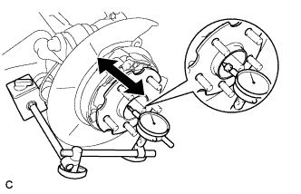

Axle System Function Inspection |
| 1. Remove Front Tire |
| 2. Disconnect Front Disc Brake Caliper Assembly LH |
 |
Remove the 2 bolts and disconnect the front disc brake caliper assembly LH from the steering knuckle.
| 3. Remove Front Disc |
 |
Put matchmarks on the disc and axle hub, and remove the disc.
| 4. Inspect Front Axle Hub & Bearing Assembly Axial Play |
 |
Using a dial indicator, check the bearing axial play near the inner circumference (flange) of the axle hub.
| 5. Inspect Front Axle Hub & Bearing Assembly Runout |
 |
Using a dial indicator, check the axle hub runout near the outer circumference of the axle hub.
| 6. Install Front Disc |
|
Align the matchmarks on the disc and axle hub, and install the disc.
| 7. Install Front Disc Brake Caliper Assembly LH |
Install the front disc brake caliper assembly LH to the steering knuckle with the 2 bolts.
| 8. Install Front Tire |
| 9. Remove Rear Tire |
| 10. Separate Rear Disc Brake Caliper Assembly LH (FF Drive) |
 |
Remove the 2 bolts and separate the rear disc brake caliper assembly LH from the rear axle carrier.
| 11. Separate Rear Disc Brake Caliper Assembly LH (4WD Drive) |
|
Remove the 2 bolts and disconnect the rear disc brake caliper assembly LH.
| 12. Remove Rear Disc |
 |
Put matchmarks on the disc and axle hub, and remove the disc.
| 13. Inspect Rear Axle Hub & Bearing Assembly Axial Play |
 |
Using a dial indicator, check the bearing axial play near the inner circumference (flange) of the axle hub.
| 14. Install Rear Disc |
|
) Align the matchmarks on the disc and axle hub, and install the disc.
| 15. Inspect Rear Axle Hub & Bearing Assembly Runout |
 |
Secure the rear disc with the hub nuts.
Using a dial indicator, inspect the runout at 10mm inside the outer edge of the rear disc.
| 16. Install Rear Disc Brake Caliper Assembly LH (FF Drive) |
|
Install the rear disc brake caliper assembly LH to the rear axle carrier with the 2 bolts.
| 17. Install Rear Disc Brake Caliper Assembly LH (4WD Drive) |
|
Install the rear disc brake caliper assembly LH with the 2 bolts.
| 18. Install Rear Tire |